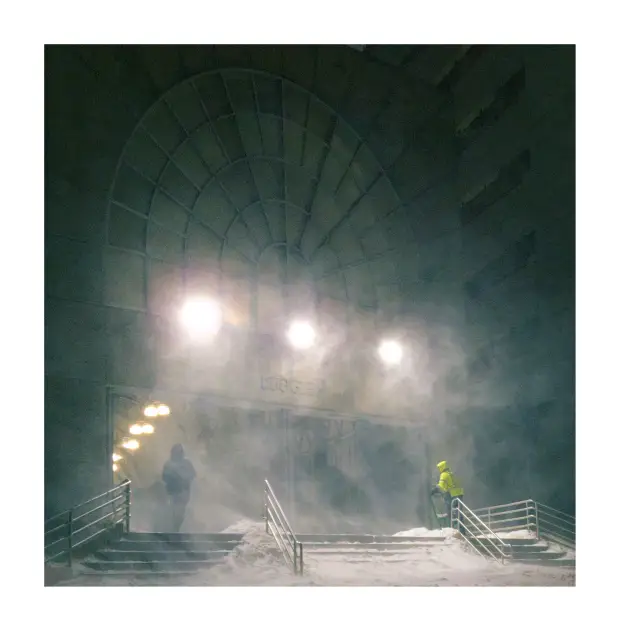
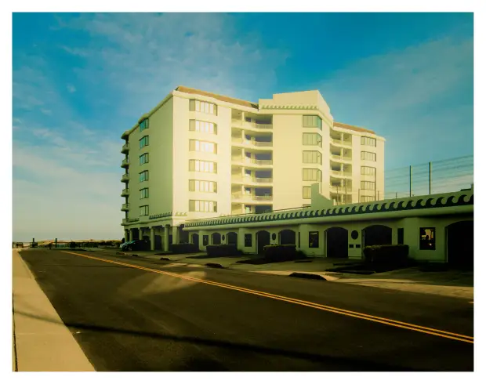
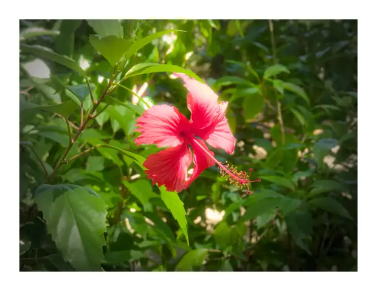

Chapter 02
Photography
101 photographs across 6 albums. More on Instagram at @vk.artsz.
 10
10
Monroe 2026
These were taken in my hometown after a huge photography break (which was taken during my last semester of freshmen year of college).

5Boston 2026
I didn't take as many pictures during this time frame because I started my semester at Boston campus (northeastern) and was very busy with projects and school. I had fun going out during a very aggressive snow storm and taking pictures though. I also won another photography competition.
 20
20
Spain 2025
These pictures take place in Madrid, Monasterio De Piedra, Valencia and Cordoba. I took these during my first college semester abroad in Spain and I was exposed to lots of new environments and art styles. I also won my first photography competition here (Madrid). See my art instagram for even more pictures: @vk.artsz
 33
33
Japan 2025
This was one of my favorite trips. I improved a lot with photography once again as well as editing and I traveled a lot. Pictrues include shots from Tokyo, Osaka, Kyoto and Hiroshima. I have lots more shots on my art instagram: @vk.artsz. Half my japan RAW photo files actually got corrupted so I lost half my stuff.

27Wildwood 2025
These were when I really started playing around with editing. Wildwood was very pivotal for me because I started to develop a style and see what worked and what didn't. There are way more pictures on my art instagram @vk.artsz

6Dominican Republic 2024
These pictures represent the start of my photography journey. I found my dad's old Canon SX50 HS and I first learnt how to edit on darktable